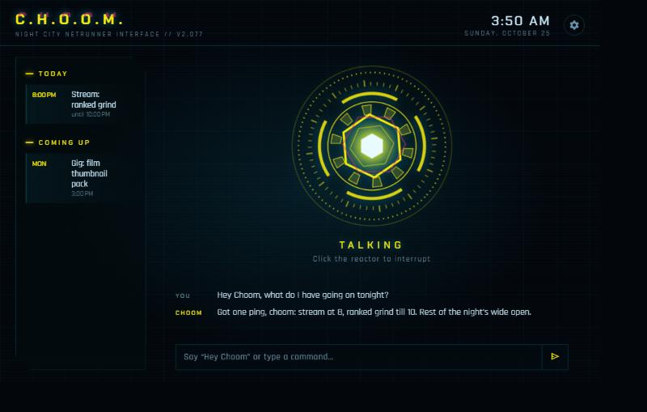

PROJECT_01 // Voice Assistant
J.A.R.V.I.S. Voice Assistant
A wake-word desktop assistant for Windows, styled after Iron Man's JARVIS, that runs on a free local AI model.
CASE_STUDY.TXT

# overview
J.A.R.V.I.S. is a voice-activated personal assistant for Windows that I'm building for a friend. It only listens after a wake word, then opens files and apps, arranges windows, manages a calendar and reminders, searches the web, controls Spotify, and can critique a screenshot (handy for reviewing YouTube thumbnails). Everything runs on the user's own PC by default, with no account, API key or subscription required.
It has grown from a first prototype into a packaged app with a one-click installer, in-app updates, four complete visual themes, and a Discord bot that can message the assistant when the PC is off. Friends who use it send me bug and feature lists, which drive each release.
# the problem
Commercial assistants are cloud-first, locked to their own ecosystems, and can't do the things I actually wanted: find a file in my Downloads folder, snap a window to half the screen, or add "class every Monday, Wednesday and Friday until December 11" to a calendar. Cloud AI APIs also cost money per request, which is a poor fit for something a group of friends should be able to install for free.
So the goal was an assistant that is private by default, free to run, and genuinely useful on a Windows desktop, while still feeling good to use. The hard part turned out not to be any single model, but making a small local model reliable enough to trust with your calendar.
# how it works
Every request flows through the same pipeline. Each stage is a separate module, so any piece (wake word, speech recognition, brain, voice) can be swapped without touching the others.
mic -> openWakeWord "Hey JARVIS" detected locally
-> faster-whisper speech to text, on the PC
-> brain local Qwen3 8B (Ollama) or optional Claude
| decides which tool to call
v
tools.py 25+ functions: files, apps, windows,
| calendar, reminders, notes, Spotify...
v
-> Piper TTS spoken reply, generated locally
-> HUD (pywebview) animated reactor, transcript, schedule- Tool calling. The model never touches the PC directly. It chooses from a fixed list of typed tools (for example
set_reminderorwindow_control) and the Python code executes them, which keeps behavior predictable and safe. - Two brains, one interface. A local Ollama model is the default; pasting an Anthropic API key switches to Claude for harder questions. Both share the same tools and system prompt.
- Resource limits. Settings expose GPU mode (full, balanced, CPU only), unload-after-idle, and a reply-length cap. A game mode stops listening and frees the graphics card while a game is running.
- HUD. A pywebview window renders an HTML/SVG arc reactor whose animation follows the audio level while JARVIS speaks.
A trimmed look at one of the typed tool definitions the model can call:
{
"name": "set_reminder",
"description": "Set a spoken reminder. JARVIS will say it aloud at the due time.",
"input_schema": {
"properties": {
"text": { "type": "string" },
"due": { "type": "string", "description": "YYYY-MM-DDTHH:MM local time." },
"repeat": { "type": "string", "enum": [ ... ] },
"days": { "type": "array", "description": "e.g. [\"tuesday\", \"thursday\"]" }
},
"required": ["text", "due"]
}
}# examples
These are the kinds of requests it handles. Responses below are illustrative.
Hey JARVIS, remind me every weekday at 8 to take my meds.
Done. I'll remind you every weekday at 8:00 AM.
Class every Monday, Wednesday and Friday 10:30 to 11:20 until December 11.
Added to your calendar, repeating Monday, Wednesday and Friday until December 11.
Make Discord bigger and put Opera on the left half.
Done.
Evaluate this thumbnail design and tell me improvements.
(captures the screen, runs a local vision model, and critiques contrast, text size and focal point)
Each theme is a complete reskin, not just a color change: it swaps the assistant's name, wake phrase, personality, voice, fonts and the reactor design. Here is the Cyberpunk theme ("Hey Choom") with its hexagonal reactor:

# engineering challenges
-
A small model that can't count weekdays.
The local 8B model kept miscalculating "next Thursday". Rather than hoping for a bigger model,
I compute a date cheat-sheet in code and inject it into every message, so the model only has to
copy the right date instead of doing calendar math.
Dates: today (Sunday)=2026-10-25, tomorrow (Monday)=2026-10-26, Tuesday=2026-10-27, ... next Sunday=2026-11-01. Times: 12pm=12:00, 1pm=13:00, ... ; in '4 to 9 pm' both are pm. - Wake phrases with no model. openWakeWord ships a model for "Hey JARVIS" but not for custom phrases like "Hey Choom". For those I built speech spotting on top of Whisper: it transcribes short windows, fuzzy-matches likely mishearings, and retries because Whisper tends to drop a fast leading "Hey". On synthesized test speech it caught 32 of 35 wake attempts with no false wakes.
- Fitting vision into 8 GB of VRAM. The default 8B vision model is a "thinking" model that spilled onto the CPU and timed out after five minutes. Switching to the 4B instruct variant keeps it fully on the GPU and answers in about 15 seconds.
-
File search that feels instant.
Walking the home folder took over 8 seconds per query, so file lookups go through the
Windows Search index via
pywin32instead. - Cloud voice that stopped working. My first text-to-speech choice, Microsoft's online Edge voices, returned 403 errors, so I replaced it with Piper, which runs fully locally and fits the privacy goal.
-
A sandbox that hid the data.
Apps launched from inside the Claude desktop app are MSIX-sandboxed, so their AppData writes
landed in a private package folder that my own launches never saw. User data now lives in
a plain
~/JarvisDatafolder.
# reaching the phone
A desktop assistant is useless for reminders when the PC is off, so I added a Discord bot on
Cloudflare Workers with a D1 database. One shared bot serves many users: each install pairs with
a one-time code, then /today, /remind, /event and /cancel
work from a phone, and reminders arrive as DMs. Tenant keys are stored only as SHA-256 hashes, pairing
is rate-limited per IP, and the whole thing runs on Cloudflare's free plan.
# shipping it
To make it installable by non-programmers, a single installer script sets up Python, Ollama, the app and the AI models (about 12 GB, mostly the models), lets the user pick which drive to use, and creates Desktop and Start Menu shortcuts. Updates are delivered from private GitHub releases through a read-only fine-grained token, and a small script bumps the version and publishes each release.
# results
JARVIS runs end to end on an RTX 3070 Ti with 8 GB of VRAM: wake word, transcription, reasoning, tool use and speech all happen locally, and the first release shipped within a week of starting. It is now at v1.2.1 after 11 releases, with roughly 9,000 lines of Python, JavaScript, HTML and CSS. The multi-tenant Discord service and installer mean friends can set it up themselves.
JARVIS is still in active development. Once it's finished, I plan to publish the source on GitHub and link it here. In the meantime, get in touch if you'd like to hear more.
# what I'd do differently
- Add automated tests around date and time parsing, since that is where a small local model is weakest.
- Move more of the scheduling logic from prompt-level hints into deterministic code, so the model only picks the tool.
- Record a short demo video and publish a sanitized public version of the repository.
END TRANSMISSION